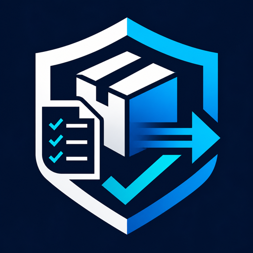

QC
Quality control
Build repeatable inspection records with owners, due windows, progress, and notes.

BESNARD CHRISTIANOperations tracking for quality control checklists, equipment checkout, shipment logs, and compliance reporting, stored locally on the Android device.
Focused screens help teams create records, update status, and review outstanding operational tasks.
Build repeatable inspection records with owners, due windows, progress, and notes.
Track tools and equipment with references, current status, and return follow-up.
Keep dispatch handoff notes, shipment references, and blocked items visible.
Review readiness signals and add evidence snapshots for internal closeout.
The Android app works without accounts, analytics, cloud sync, or external APIs. Records stay in local app storage until the user clears app data or uninstalls the app.